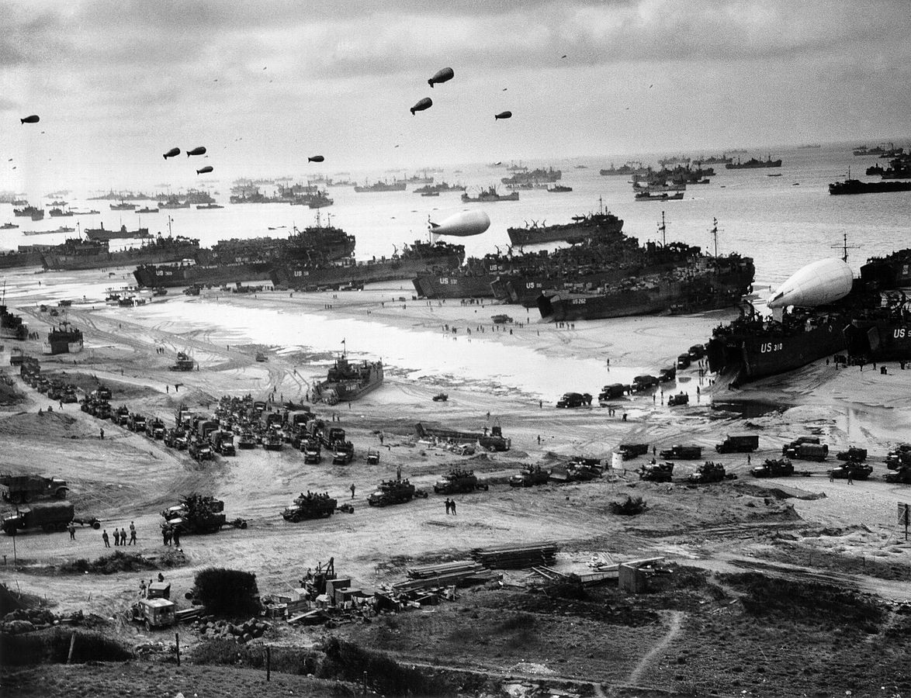
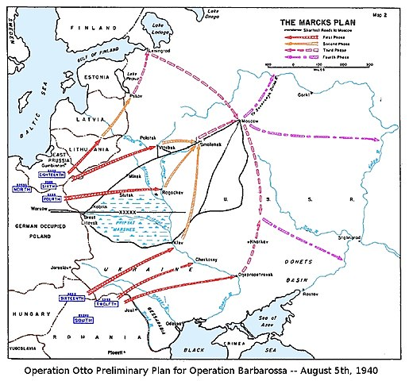
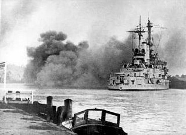

Operation Overlord - 9 Juni 1944
Operation Overlord war eine der mehreren Schlachten um die Normandie der alliierten, die im Zweiten Weltkrieg die erfolgreiche Invasion des deutsch besetzten Westeuropas startete. Die Operation wurde am 6. Juni 1944 mit den Landungen in der Normandie gestartet. Ein Flugzeugangriff mit 1.200 Flugzeugen startete die Invasion danach folgte ein Amphibienangriff, an dem mehr als 5.000 Schiffe beteiligt waren. Am 6. Juni überquerten fast 160.000 Soldaten den Ärmelkanal, Ende August waren mehr als zwei Millionen alliierte Truppen in Frankreich.
Als Hitler 1942 durch die Razzien auf St Nazaire und Dieppe alarmiert wurde, befahl er den Bau von Befestigungen an der gesamten Atlantikküste, von Spanien bis Norwegen, um sich vor der erwarteten Invasion der Alliierten zu schützen. Er sah 15.000 Stellungen vor, die mit 300.000 Soldaten besetzt waren, aber aufgrund von Mangel an Ressourcen, vorallem Beton und Arbeitskräften, wurden die meisten Stützpunkte nie gebaut. Der erwartete Ort einer alliierten Invasion war Pas-de-Calais und somit wurde er stark verteidigt. In der Normandie konzentrierten sich die besten Befestigungen auf die Hafenanlagen von Cherbourg und Saint-Malo.
Rommel glaubte, dass die Deutschen die Chance hätten, die Invasion am Ufer zu stoppen, und bat darum, mobile Reserven insbesondere Panzer so nahe wie möglich an der Küste zu stationieren. Rundstedt General Leo Geyr von Schweppenburg und andere hochrangige Befehlshaber glaubten, dass die Invasion an den Stränden nicht gestoppt werden könne. Die Panzer-Formationen sollten sich in einer zentralen Position in der Nähe von Paris und Rouen befinden und erst eingesetzt werden, wenn der Hauptkopf der Alliierten identifiziert wurde.
D-Day begann auf der Gold-beach um 05:30 Uhr mit einem Seebombardement und der Landung mit Amphibien um 07:25 Uhr. Starke Winde machten die Bedingungen für die Landungsboote schwierig, und die amphibischen DD-Panzer wurden in der Nähe der Küste oder direkt am Strand freigelassen, statt wie geplant weiter aussen. Drei der vier Geschütze in einer grossen Stellung in der Longues-sur-Mer-Batterie wurden durch direkte Treffer der Kreuzer Ajax und Argonaut um 06:20 Uhr zerstört. Die vierte Waffe wurde am Nachmittag abgeschaltet und ihre Besatzung kapitulierte am 7. Juni. Luftangriffe hatten es nicht geschafft, den Stützpunkt von Le Hamel zu treffen, der nach Osten ausgerichtet war, um entlang des Strandes Feuer zu geben, und eine dicke Betonwand auf der Seeseite hatte. Die 75-mm-Kanone gab Schüsse bis 16:00 Uhr weiter ab, als ein modifizierter Panzerfahrzeug eine grosse Petard-Bombe in den hinteren Eingang abfeuerte. Eine zweite Festung in La Rivière mit einer 88-mm-Kanone wurde um 07:30 Uhr durch einen Panzer neutralisiert.
In der Zwischenzeit begann die Infanterie, die stark befestigten Häuser am Ufer zu räumen, und drang im Landesinneren vor. Die britischen Kommandos der Royal Marine rückten auf Port-en-Bessin vor und nahmen es am 7. Juni in der Schlacht von Port-en-Bessin ein. An der westlichen Flanke des 1. Bataillons eroberte das Hampshire Regiment Arromanches. Die 69. Infanterie-Brigade an der Ostflanke kam mit den kanadischen Truppen in Juno in Kontakt. Der Unteroffizier Major Stanley Hollis erhielt das einzige am D-Day ausgezeichnete Victoria Cross für seine Aktionen, als er zwei Bunker an der Mont Fleury-Batterie angriff. Aufgrund des starken Widerstands der deutschen 352. Infanteriedivision wurde erst am nächsten Tag gefangen genommen. Schliesslich endete die Operation mit einem Sieg der Allierten und öffnete Ihnen die Tür zu dem kontinentalen Europa.
Operation Barbarossa - 22 Juni 1941
Die Operation Barbarossa der Begriff für die Invasion der Achsenmächte (Italien, Deutschland, Slowakei usw...) auf die Sowjetunion, die am Sonntag, dem 22. Juni 1941, im Zweiten Weltkrieg begann. Die Operation stammte aus den ideologischen Zielen von Nazideutschland, um die westliche Sowjetunion zu erobern, damit sie von den Deutschen neu bevölkert werden konnte (Lebensraum), die Slawen sollten als Sklaven für die Achse eingesetzt, der Rest ermordet werden. Eines der Ziele war die riesigen Ölreserven des Kaukasus und der landwirtschaftlichen Ressourcen der sowjetischen Gebiete zu erobern.
Zwei Jahre vor der Invasion unterzeichneten Deutschland und die Sowjetunion politische und wirtschaftliche Pakte zu strategischen Zwecken. Trotzdem plante das deutsche Oberkommando im Juli 1940 eine Invasion auf die Sowjetunion, die Adolf Hitler am 18. Dezember 1940 genehmigte. Im Verlauf der Operation wurden rund drei Millionen Angehörige der Achsenmächte, die grösste Invasionsstreitkraft in der Geschichte des Krieges drang auf einer 2.900 Kilometer langen Front in die westliche Sowjetunion ein. Neben den Truppen setzte die Wehrmacht rund 600.000 Kraftfahrzeuge und zwischen 600.000 und 700.000 Pferde für nicht kämpfende Einsätze ein. Die Offensive markierte ein Höchepunkt des Zweiten Weltkriegs.
Eigentlich erzielten die deutschen Truppen bedeutende Siege und besetzten einige der wichtigsten Wirtschaftsräume der Sowjetunion (hauptsächlich in der Ukraine) und verursachten schwere Verluste. Trotz dieser Erfolge der Achse kam die deutsche Offensive Ende 1941 in der Schlacht von Moskau zum Stillstand, und die anschliessende sowjetische Winteroffensive drängte die deutschen Truppen zurück. Die Rote Armee nahm die stärksten Schläge der Wehrmacht auf und zwang die Deutschen in einen *Zermürbungskrieg, auf den sie nicht vorbereitet waren. Die Wehrmacht startete nie wieder eine gleichzeitige Offensive entlang der gesamten Ostfront.

Russische Bauern flohen vor den heranrückenden deutschen Einheiten, brannten ihre Ernte nieder, vertrieben ihr Vieh und zerstörten Gebäude in ihren Dörfern als Teil einer Politik der verbrannten Erde, die dazu bestimmt war, der Kriegsmaschine der Nazis die nötigen Vorräte und Nahrungsmittel abzuschalten.
Der erste Schlag traf die Sowjets völlig überraschend, als die aus dem Süden zurückkehrende 2. Panzergruppe Oryol, nur 121km südlich der ersten Verteidigungslinie der Sowjetunion, einnahm. Drei Tage später drangen die Panzer nach Brjansk vor, während die 2. Armee von Westen angegriffen wurde. Die sowjetische 3. und 13. Armee war nun eingeschlossen. Im Norden griffen die 3. und 4. Panzerarmee Vyazma an und fingen die 19., 20., 24. und 32. Armee ein. Moskaus erste Verteidigungslinie war zerstört. Die Sowjets hatten jetzt nur noch 90.000 Mann und 150 Panzer zur Verteidigung von Moskau.
Am 2. Dezember rückte ein Teil der 258. Infanteriedivision innerhalb von 24 km von Moskau vor. Sie waren so nahe, dass deutsche Offiziere behaupteten, sie könnten die Turmspitzen des Kremls sehen, aber bis dahin hatten die ersten Schneestürme begonnen. Ein Aufklärungsbataillon erreichte die Stadt Khimki, nur etwa 8 km von der sowjetischen Hauptstadt entfernt. Es eroberte die Brücke über den Moskau-Wolga-Kanal sowie den Bahnhof, der den östlichsten Vormarsch der deutschen Streitkräfte markierte. Trotz der erzielten Fortschritte war die Wehrmacht für einen so harten Winterkrieg nicht gerüstet. Die sowjetische Armee war besser für den Kampf unter winterlichen Bedingungen geeignet, hatte jedoch Mangel an Winterkleidung. Den deutschen Streitkräften ging es schlechter, da Tiefschnee die Ausrüstung und die Mobilität zusätzlich behinderte. Die Witterungsbedingungen hatten die Luftwaffe weitgehend abgeschaltet und grossen Flugbetrieb verhindert. Die neu geschaffenen sowjetischen Einheiten in der Nähe von Moskau zählten jetzt über 500.000 Mann. Am 5. Dezember starteten sie einen massiven Gegenangriff als Teil der sowjetischen Wintergegenoffensive. Die Offensive stoppte am 7. Januar 1942, nachdem sie die deutschen Armeen 100–250 km von Moskau zurückgeschoben hatte. Die Wehrmacht hatte die Schlacht um Moskau verloren, und die Invasion hatte die deutsche Armee über 830.000 Mann gekostet.
Das Scheitern der Barbarossa-Operation erwies sich als Wendepunkt im Schicksal des Dritten Reiches. Am wichtigsten war jedoch, dass die Operation die Ostfront öffnete, an der mehr Kräfte als an jedem anderen Ort der Weltgeschichte kämpften. Die Ostfront wurde zum Ort der grössten Schlachten und der höchsten Anzahl Opfer des Zweiten Weltkriegs, die sich alle auf den Verlauf des Zweiten Weltkriegs und der späteren Geschichte des 20. Jahrhundert auswirkten.
*Zermürbungskrieg = Eine Art von Krieg in der, der Feind auf grosse Verluste eingesetzt wird. Zum Beispiel durch Vorratsmangel.
Einmarsch in Polen - 1 September 1939
Die Invasion Polens war der Beginn des Zweiten Weltkriegs. Die deutsche Invasion begann am 1. September 1939, eine Woche nach der Unterzeichnung des Molotow-Ribbentrop-Pakts zwischen Deutschland und der Sowjetunion. Die Sowjets traffen am 17. September in Polen ein. Die Kampagne endete am 6. Oktober, als Deutschland und die Sowjetunion ganz Polen unter den Bedingungen des deutsch-sowjetischen Grenzvertrags teilten und annektierten. Die deutschen Truppen
marschierten am Morgen nach dem Vorfall von Gleiwitz von Norden, Süden und Westen in Polen ein. Die slowakischen Streitkräfte stiessen neben den Deutschen in der nördlichen Slowakei vor. Mit dem Vorrücken der Wehrmacht zogen sich die polnischen Truppen aus ihren Vorfeldern nahe der deutsch-polnischen Grenze zu festeren Verteidigungslinien im Osten zurück. Nach der polnischen Niederlage Mitte September in der Schlacht von Bzura haben die Deutschen einen unbestrittenen Vorteil gewonnen. Die polnischen Streitkräfte zogen sich dann in den Südosten zurück, wo sie sich auf eine lange Verteidigung des rumänischen Brückenkopfes vorbereiteten, und erwarteten Unterstützung und Erleichterung durch Frankreich und das Vereinigte Königreich. Während diese beiden Länder Pakte mit Polen hatten und Deutschland am 3. September den Krieg erklärt hatten, war ihre Hilfe für Polen am Ende sehr begrenzt.
Am 17. September fiel die sowjetische Rote Armee in Ostpolen ein, das Territorium, das nach dem Geheimprotokoll des Molotow-Ribbentrop-Pakts in den sowjetischen "Einflussbereich" fiel. Damit war der polnische Verteidigungsplan hinfällig. Vor einer zweiten Front stellte die polnische Regierung fest, dass die Verteidigung des rumänischen Brückenkopfs nicht mehr machbar war, und ordnete eine Notevakuierung aller Truppen in das neutrale Rumänien an. Nach der polnischen Niederlage in der Schlacht von Kock haben die deutschen und sowjetischen Streitkräfte am 6. Oktober die volle Kontrolle über Polen gewonnen. Der Erfolg der Invasion markierte das Ende der Zweiten Polnischen Republik, obwohl Polen sich niemals formell aufgegeben hat.
Deutschland hat am 8. Oktober nach anfänglicher Militärverwaltung Westpolen und die ehemalige Freie Stadt Danzig direkt annektiert und den verbleibenden Gebietsblock der Verwaltung der neu eingerichteten Generalregierung unterstellt. Die Sowjetunion hat ihre neu erworbenen Gebiete in ihre konstituierenden weissrussischen und ukrainischen Republiken aufgenommen und sofort eine Sowjetisierungskampagne gestartet. Nach der Invasion bildete eine Versammlung von unterirdischen Widerstandsorganisationen den polnischen Untergrundstaat auf dem Territorium des ehemaligen polnischen Staates.
Viele Truppen im Exil, die aus Polen fliehen konnten, schlossen sich später den polnischen Streitkräften im Westen an, einer Streitmacht, die der polnischen Exilregierung gegenüber loyal ist.
Eine weitere Frage ist, ob Polen sich zu schnell ergeben hat, nachdem sie den deutschen Truppen erhebliche Verluste zugefügt hat. In den ersten Tagen erlitt Deutschland sehr schwere Verluste. Polen kostete die Deutschen 993 Panzer und gepanzerte Fahrzeuge von denen 300 Panzer nie geborgen wurden, Tausende von Soldaten und 25% ihrer Luftstärke. Die September-Kampagne dauerte ungefähr eineinhalb Wochen weniger als die Schlacht um Frankreich im Jahr 1940, obwohl die anglo-französischen Streitkräfte in Bezug auf die zahlenmässige Stärke und Ausrüstung der Deutschen viel ähnlicher waren und von der Maginot-Linie unterstützt wurden. Ausserdem bereitete die polnische Armee den rumänischen Brückenkopf vor, der die polnische Verteidigung verlängert hätte. Der Plan wurde jedoch durch die sowjetische Invasion in Polen am 17. September 1939 für ungültig erklärt. Polen hat sich auch nie offiziell den Deutschen ergeben.